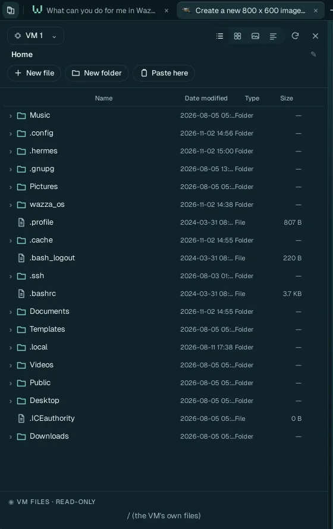

Files and sharing
Your computer and the VM have separate files. Agents and apps work on the VM's files; your own files go into the VM only when you put them there, and results come back to your computer as new files, never over yours.
Where files live#
| Place | What is there |
|---|---|
The VM's home folder (/home/ubuntu in the VM) | Everything apps and agents make: Documents, Pictures, Downloads, Desktop… The VM's own Files app and the Explorer show it. |
~/wazza_os in the VM | A folder Wazza OS shares with the VM for its own work: files attached to Chats, previews, each Chat's working folder. Leave it to Wazza OS. |
~/Company/<Name> in the VM | Company folders, read-only (below). |
Your computer's Downloads/From the VM | Files copied out of the VM land here, as new files. |
Your computer's Downloads | VM backups (zip files), exported Chats. |
Wazza OS never changes your own files: what it writes on your computer is always a new file (with
_copy2-style names when a name is taken).
The Explorer#

1 2 3 4Click the button at the far left of the tab strip. The Explorer opens over the Chat of the current tab.
The VM whose files you see (pick another running VM).
Views (list, grid, pictures, details), reload, close.
New file, New folder, Paste here.
The folder's content: click a folder's arrow to open it; double-click a file to open it in its app (a new tab); right-click a file for its menu (open with, rename, move, copy, permissions, delete, download to your computer).
Deleting in the Explorer is permanent: the VM has no trash. Wazza OS refuses to overwrite: renaming or moving onto an existing name is refused.
Bring your files into the VM#
- Copy and paste: copy files in your computer's file manager, then Paste here in the Explorer, or paste in the VM's Files app. Allowed by default; the rule is Settings › Files & sharing › From this computer to a VM (Ask, Allow, Off).
- Attach to a Chat: the Chat's + › From this computer…, or drop files on the Chat. The agent gets a copy in the VM (it asks first).
- Ask an agent: "copy my Downloads/report.pdf into the VM": an agent can search and read your computer's files (below your home folder) and copy them in. Such copies follow the same rule as your pastes: allowed by default, or a question each time if you set it to Ask.
Get files out of the VM#
- Copy and paste: copy files in the VM's Files app (or the Explorer), paste on your computer. They
land in
Downloads/From the VMas new files. By default Wazza OS asks each time (From a VM to this computer: Ask, Allow, Off). - Download: in the Explorer, a file's menu › download: your computer's Save dialog opens.
- Ask an agent: "put circle.png on my computer": it uploads it to
Downloads/From the VM(with your Allow).
Copied text goes both ways between your computer and the VM, always: copy on one side, paste on the other.
Versions and undo#
- File versions: when something overwrites, replaces or deletes one of your files in the VM, Wazza OS keeps the version before. Ask a Chat "show me the versions of Documents/report.odt" and "restore the version of 10:42": the current file is kept as a version first.
- A Chat's own edits: Wazza OS keeps a checkpoint of every file a Chat changes. Ask that Chat "what did you change?" (each change with its lines), "show me the diff of report.md", or "put my files back as they were before your last turn": it restores only when you ask, and a restore can itself be undone.
Company folders#
Your company's file servers (SFTP, FTPS or SMB), mounted read-only in every VM at ~/Company/<Name>,
so agents can read company documents without changing them. Set them up in
Settings › Files & sharing › Company folders; a team's
admins can add them for every member.
Sync with your account#
With a Wazza OS account, your skills, files and Chat history sync with your account's vault, so your other computers have them: Settings › Sync & team.
From the command line#
$ wazza --gui explorer list Documents
$ wazza --gui explorer transfer --from host --to vm-1 --folder Documents ~/report.pdf
$ wazza --gui clipboard files --to-computer allowEvery subcommand: The command line › Files.